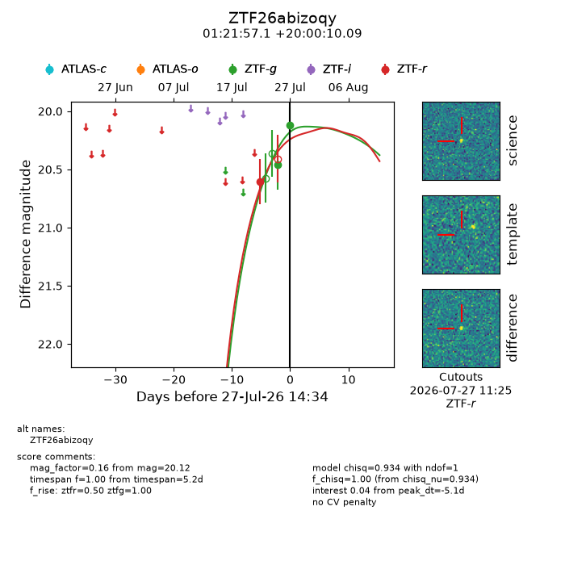
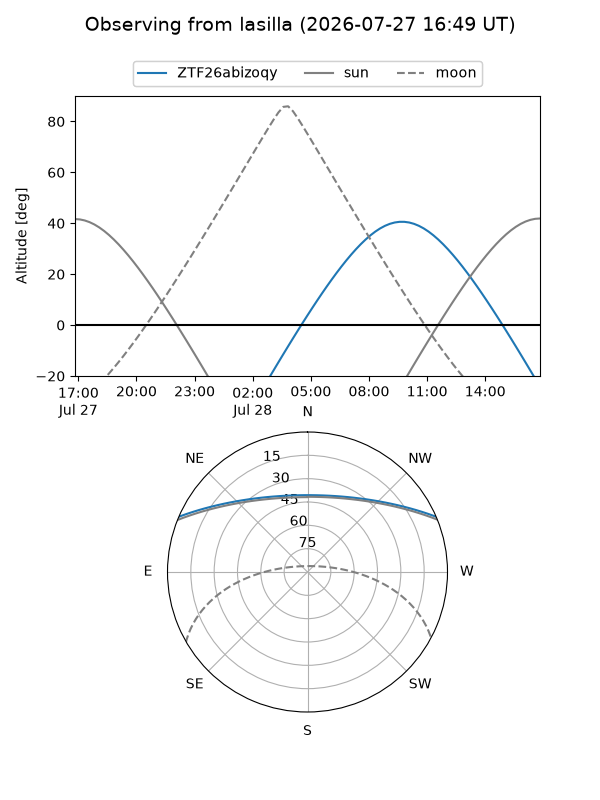
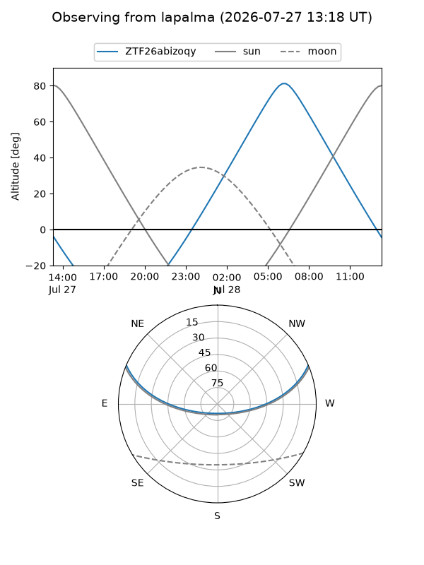
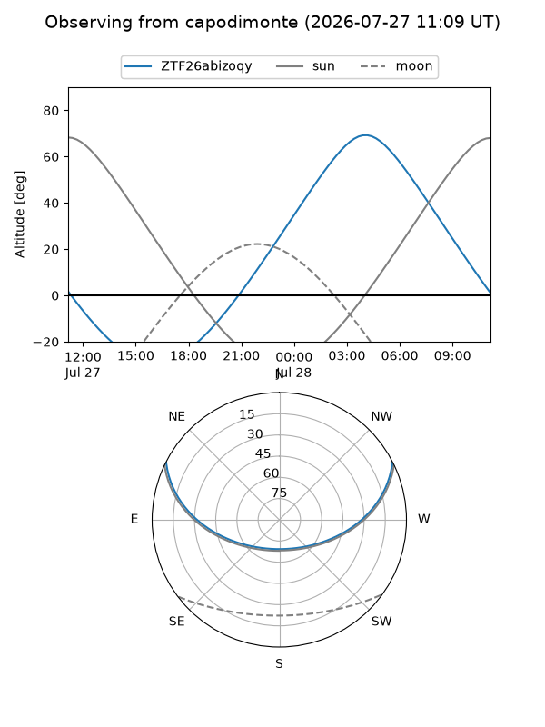
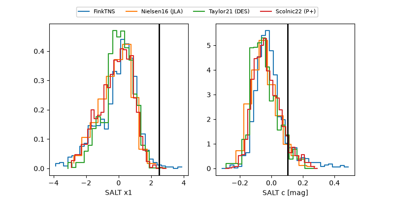

ZTF26abizoqy
Target ZTF26abizoqy at 2026-07-27 14:37
Aliases and brokers:
FINK-ZTF: ztf.fink-portal.org/ZTF26abizoqy
Lasair-ZTF: lasair-ztf.lsst.ac.uk/objects/ZTF26abizoqy
ALeRCE-ZTF: alerce.online/object/ZTF26abizoqy
Direct TNS query: direct search
alt names
ZTF26abizoqy (ztf,fink_ztf)
Coordinates:
equatorial (ra, dec) = 20.4880,+20.00280
equatorial (HMS+DMS) = 01:21:57.12,+20:00:10.09
galactic (l, b) = (132.6404,-42.29300)
Flags:
peak dt: -5.1
Photometry:
last ztfg=20.12, ztfr=20.60
2 ztfg, 1 ztfr detections
Lightcurve

Visibility



Additional plots
